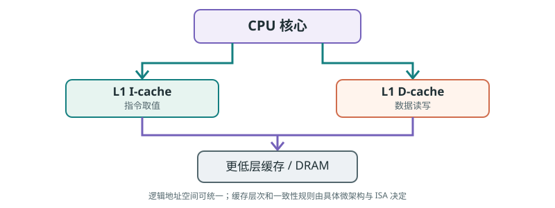

进程调度、虚拟内存和设备驱动并不是漂浮在软件中的概念。它们最终要依赖处理器指令、内存层次、异常入口和设备互连来实现。本章关注四个相互关联的问题：指令与数据怎样进入处理器、ISA 怎样定义软件可见的机器、数据为何有不同访问成本，以及 CPU 如何响应外部事件和执行异常。
一、冯·诺依曼架构与哈佛架构
存储程序计算机把指令作为数据一样存放在可寻址存储系统中。常见的“冯·诺依曼架构”和“哈佛架构”对比，主要讨论指令与数据是否使用分离的存储通路；现实处理器可能在不同层次采用不同组合，因此不要只凭一张二分图判断整个芯片。

1. 统一地址空间与共享通路
在经典冯·诺依曼模型中，指令和数据共享存储空间与通路。这个模型有助于解释存储程序和处理器—内存之间的带宽瓶颈，但现代处理器通常有多级缓存、预取、乱序执行和多个内部通路，不能把“共享总线”当成所有现代 CPU 的字面实现。
2. 分离指令与数据通路
经典 Harvard 组织把指令存储和数据存储分开，允许取指与数据访问并行进行。微控制器和 DSP 领域可见不同形式的 Harvard 组织。现代通用 CPU 常在缓存层采用分离的 L1 I-cache 与 D-cache，再通过更下层的统一缓存或内存系统连接。是否能并行访问、是否需要同步指令缓存，取决于具体 ISA 与微架构。
不要把缓存分离等同于地址空间分离。处理器内部有独立 I-cache/D-cache，并不意味着程序看到两套互不相干的虚拟地址空间。自修改代码、JIT 代码生成和指令缓存一致性都需要遵守目标架构的规则。
二、x86/ARM/RISC-V三大指令集对比
指令集架构（ISA）定义软件可见的指令、寄存器、异常行为和内存模型；微架构则描述某一处理器怎样实现这些指令。把 ISA 直接等同于 CPU 的流水线、功耗或执行效率，会混淆两个层次。
| ISA | 编码与设计特点 | 需要避免的简化 |
|---|---|---|
| x86-64 | 指令长度可变；Intel/AMD 处理器的具体实现会把指令解码为内部操作 | “CISC”不能直接推出某条指令更慢或功耗更高 |
| AArch64 | A64 指令采用 32 位定长编码；ARM 还存在 AArch32/Thumb 等历史和兼容执行状态 | 不要把所有 ARM 执行状态都说成固定 32 位指令 |
| RISC-V | 开放标准、模块化扩展；基础指令集可配合 C 等压缩指令扩展 | 开放 ISA 不代表任何实现都没有专利、验证或商业成本 |
x86 的可变长指令与 ARM/RISC-V 常见的定长编码，体现了不同的编码和兼容性取舍。现代 x86 微架构常将复杂指令解码成内部微操作；这是具体实现策略，不是 ISA 对所有处理器强制规定的内部执行方式。RISC 与 CISC 是理解历史设计目标的有用标签，不应被当作现代处理器性能排名。
进一步阅读可查阅 Intel 64 与 IA-32 架构手册、Arm 架构文档和 RISC-V 规范库。
三、存储金字塔
寄存器、缓存、DRAM 和持久化存储在容量、延迟、带宽和成本上存在明显差异。常见层级是寄存器 → L1/L2/L3 缓存（具体层级依处理器而异）→ DRAM → SSD/HDD。越靠近 CPU 的存储通常容量更小、访问更快；越靠近持久化介质的存储容量更大，但随机访问延迟通常更高。
| 层级 | 主要由谁管理 | 典型用途 | 延迟判断 |
|---|---|---|---|
| 寄存器 | 指令集与编译器/程序 | 当前指令操作数、状态 | 处理器执行路径内 |
| L1/L2/L3 Cache | 主要由硬件管理 | 缓存近期指令和数据 | 从 L1 到更低层通常逐级增加 |
| DRAM | 内存控制器、OS 虚拟内存子系统 | 进程工作集、内核数据 | 通常显著慢于缓存命中 |
| SSD / HDD | 文件系统、块层、设备控制器 | 持久化文件和块数据 | 随机访问通常远慢于 DRAM |
网上常见的“L1 是 1ns、DRAM 是 100ns、SSD 是 10μs”只能作为某些平台上的数量级示意，不能作为跨机器常数。缓存延迟、带宽、NUMA 拓扑、内存频率、设备队列深度和 I/O 模式都会改变测量结果。
局部性与软件层缓存
时间局部性指近期访问的数据可能很快再次访问；空间局部性指访问一个地址后，邻近地址可能随后被访问。CPU cache 利用这些规律加速内存访问。操作系统的页缓存（page cache）则缓存文件数据，减少重复的块设备 I/O。二者服务于不同层次：不要把页缓存当成 CPU 的 L1/L2 cache，也不要把所有缓存未命中都归因于操作系统。
# 在 Linux 上对自己的程序观察硬件事件
perf stat -e cycles,instructions,cache-misses -- ./your_program这条命令是否可用取决于 CPU PMU、内核配置和权限；事件定义也可能因微架构而异。记录 CPU 型号、内核版本、程序输入和重复次数，才有条件比较结果。
机制追踪：一次 cache miss 为什么不等于一次缺页？
读入一个指针 p 的值时，处理器先面对的是虚拟地址翻译与缓存层次两个不同问题。它们可能同时发生，却不能合成一个“缺页”概念。
- 地址翻译：CPU 需要把虚拟地址转换为物理地址；TLB 命中可以避免常规页表遍历，TLB 未命中可能触发页表遍历，但不必然陷入内核。
- 数据访问：得到物理地址后，目标缓存行可能命中 L1/L2/共享缓存，也可能访问 DRAM。CPU cache miss 是微架构层面的缓存事件，不等于页故障。
- 真正的页故障：当页表项的访问权限或映射状态无法满足当前访问时，处理器产生同步异常；操作系统再判断是按需分配、COW、换入，还是非法访问。
- 观测边界：
perf的cache-misses、page-faults统计来源和精度不同；部分硬件事件可能不可用或需要权限。
思考：TLB miss 之后一定会从 SSD 读取数据吗？
不会。TLB miss 可能仅在内存中的页表遍历后解决；页表遍历又可能命中 CPU cache。即使发生缺页异常，也可能只是首次分配匿名页，不需要读取 SSD。
四、中断与异常
处理器需要处理两类重要事件：来自设备或计时器的异步中断，以及执行当前指令时检测到的同步异常。不同 ISA 对 interrupt、exception、trap、fault 的术语和分类并不完全相同，因此下面先给出概念层面的区分。
| 事件 | 触发时机 | 例子 |
|---|---|---|
| 外部中断 | 与当前指令流异步 | 计时器、网卡、存储控制器通知 CPU |
| 同步异常 | 由当前指令执行或访问触发 | 非法指令、除零、页故障 |
| 系统调用陷入 | 程序主动请求内核服务 | x86-64 syscall、AArch64 svc、RISC-V ecall |
在 x86 上，外部中断通常由 APIC 等中断控制器路由到处理器的中断入口；异常入口由处理器按架构定义的规则产生。CPU 会按相应机制保存返回所需的状态，内核入口代码再保存额外寄存器、选择处理程序并在适当时机返回。并非所有异常都会压入相同的错误码，也不是每种架构都使用 x86 的 IDT。
系统调用与设备中断都可能使执行从低特权级进入更高特权级，但它们的触发原因不同：系统调用是应用有意请求服务；设备中断则是外部事件到达。这个区别将在下一章的用户态/内核态边界中继续展开。
五、结语与下一章预告
硬件知识最重要的作用，是帮助我们把抽象机制放回真实执行路径：ISA 决定软件可见的机器契约；缓存与内存层次影响数据访问成本；中断和异常为操作系统提供事件入口。具体性能数字必须在具体硬件和软件环境中测量，不能从一张通用表格直接推导。
下一章讨论内核架构：相同的硬件能力，可以通过不同的内核/用户态边界组织成宏内核、微内核或其他系统结构。
微实验：对比 CPU 硬件事件与软件缺页事件
环境：Linux、perf；部分事件需要 PMU 支持或性能计数器访问权限。先观察配置，再执行一个不需要修改系统的命令。
uname -m
cat /proc/sys/kernel/perf_event_paranoid
perf stat -e page-faults,context-switches -- /bin/true
# 若 CPU/权限允许，再加硬件事件：
perf stat -e cycles,instructions,cache-misses -- /bin/true预期：软件事件可能显示页故障和上下文切换计数；硬件事件可能显示计数，也可能报权限或“不支持事件”。/bin/true 运行时间很短，计数易受动态加载器和观测开销影响，不能用来比较不同 CPU 的性能。
排查：若 perf 不存在，请按发行版安装与运行内核匹配的工具；若权限不足，记录失败信息，不要为了实验直接修改全局安全参数。清理：无状态修改。
本章自测 · 从概念走向验证
区分 ISA 与微架构、CPU cache 与 page cache、外部中断与同步异常。哪些数字不能从通用存储金字塔表直接推导？
查看思考提示
从定义所在层次入手：软件可见契约、处理器内部实现、内核文件缓存和设备 I/O。